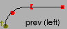
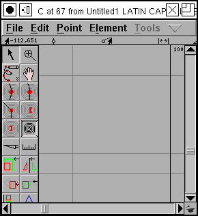
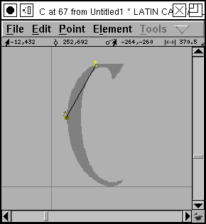
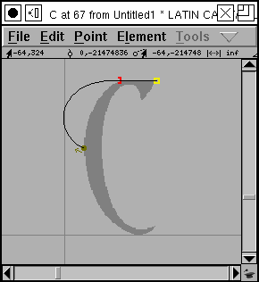
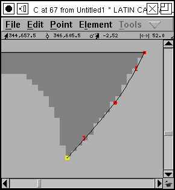
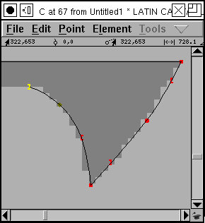
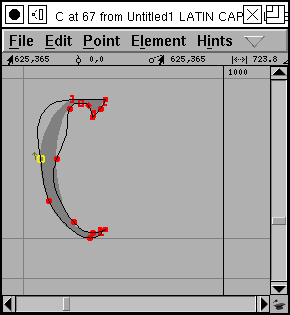
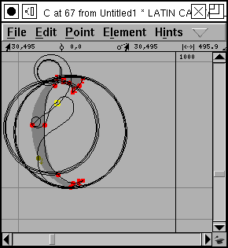

Spiro Tutorial
- Font Creation
- Creating a glyph (tracing outlines)
- Create glyph outlines using spiro points
- Importing a glyph from Inkscape (or Illustrator, or some other vector editor)
- Navigating to other glyphs
- On to the next glyph (consistent directions)
- Consistent serifs and stem widths
- Building accented glyphs
- Building a ligature
- Lookups and features
- Examining metrics
- Kerning
- Glyph variants
- Anchoring marks
- Conditional features
- Checking your font
- Generating it
- Font Families
- Final Summary
- Bitmap strikes
- Scripting Tutorial
- Notes on various scripts
Creating a glyph using spiros
Spiro is the work of Raph Levien, it provides an alternate method of designing a glyph using a set of on-curve points rather than the traditional mixture of on and off curve points used for bezier splines.
There are 5 different types of spiro points
- G4 Curve Points (continuous up to the fourth derivative)
-
G2 Curve Points (continuous up to the second derivative)
Bascally this boils down to: If you have a sharp curve you are probably better off using a G2 point, while a more gentle curve would call for a G4. - Corner Points
- Prev Constraint points (to be used when the contour changes from a curve to a straight line)
-
Next Constraint points (to be used when the contour changes from a straight
line to a curve)

As before let us try to edit the "C" glyph from Ambrosia.
|  |  |
 |
| Again we start with a blank glyph. Note that there is a button in the
shape of a spiral in the tool pane. If you press this button you go into
spiro mode, and the tools available to you change slightly.
(If you press the button again you go back to Bezier mode) Again use File->Import to import a background image and then scale it properly. (If you don't know how this is done, look at the previous page) |
Select the G4 curve point (the tool on the left side of the third row).
G4 curve points have the nice properties that the slope of the splines will be the same on either side of them, and the curvature of the splines will be too. Then move the pointer over the image and click to place a point at a point on the edge of the bitmap image. |
Select the "next constraint" point which changes the contour nicely from
a curve to a straight line.
If you pick the wrong constraint (and I often do -- it will become obvious later when the contour looks distorted here), then select the constraint point and use Element->Get Info to change the point type -- or use the Point menu. |
|  |  |
 |
| Now select the corner point from the tool menu (the one that looks like
a square).
Place it at a location where the slope changes abruptly -- a corner. We are now readly to talk about the "left tangent point". Pretend you are standing on the corner point, facing toward the tangent point. Is the next point after it (in this case the curved point) to your left or to your right? If to your left, use a left tangen, if to your right, use a right tangent. |
Now we want to do some fiddly work on the top of the "C". Here we have
a serif with a slight curve to it between two corners, two abrupt changes
of direction.
We need to get a close up view of the image in order to work more precisely, so select the magnifying glass tool from the tool pane, move it to the middle of the serif, and click it several times until the serif fills the screen. |
Generally a corner point should have a constraint (or another corner) point on either side of it, so we need to pick another constraint. In this case the contour will change from a straight line to a curve, so that means a "prev constraint" point. |
|  |  |  |
| Then proceeding to fill in the other points needed to make for a smooth curve of the serif. | And another smooth curve of the other side of the serif. | Now it is no longer useful to have such a close view of the image, so
grab the magnifying glass tool again, and hold down the Alt (Meta, Option)
key. The cursor should change, and clicking it will zoom you out.
Then fill in the remainder of the points on this side. |
 |
 |  |
| As we approach the lower tip of the C we again need to zoom in | And eventually we have completed a rough outline of the glyph. Clicking
on the start point will close the curve.
Unfortunately the result isn't quite what we'd hoped. There are some rather erratic bulges. We can fix that by
|
In the process of fixing things we can move a point so far that the spiro
converter can't make sense of it. All of a sudden our (almost) nice outline
turns into an erratic spirals.
Don't worry about it, just move the point back and things return to normal. If you move the point too far things can get even worse and the outline will disappear altogether. Don't worry about that either, just put the point back. Or use Edit->Undo. And enjoy the curious beauty of the spirals you have unintentionally created. (Raph is working on this, and at some point we may lose the spirals entirely, but they have a certain charm -- I'll be sorry to see them go) |
 |
This is probably not the best way to edit with spiros. Raph Levien uses an approach where he puts points at the major features of the glyph, closes the contour and then adds and moves points later to get a better fit to the glyph. Experiment, find what works for you.